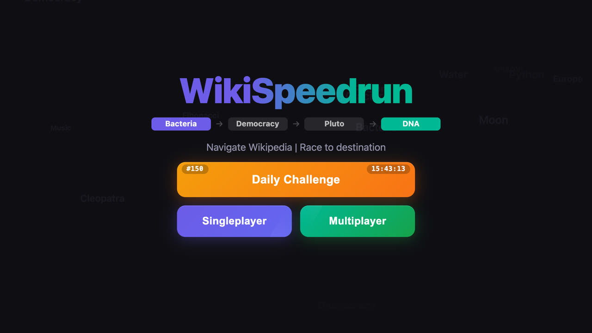
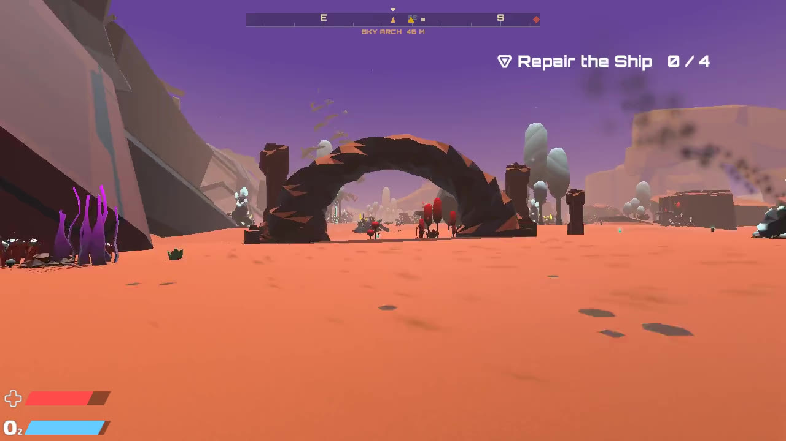
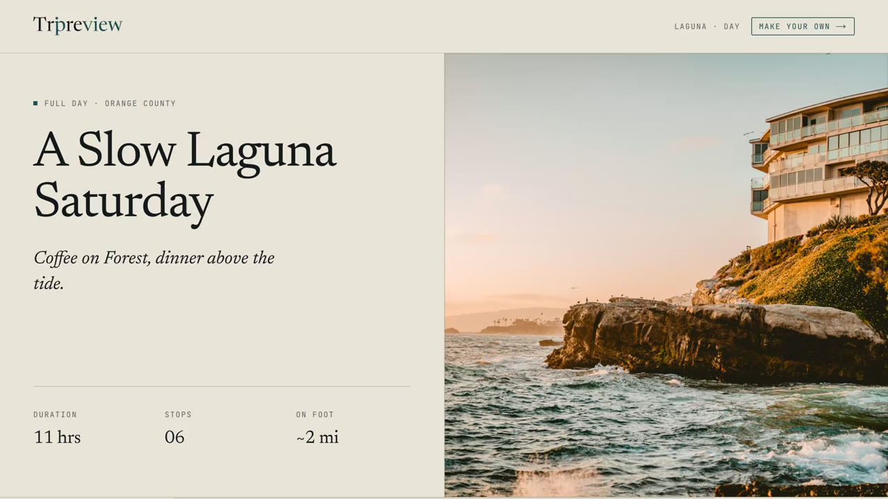

Selected work
Projects you’ve opened turn purple.
-

WikiSpeedrun
LiveA browser game where players race each other through Wikipedia using only in-article links. Room-code lobbies with live position and timer sync, and three game modes.
50,000 players160+ GitHub stars
-

Halfway Home
Coming to Steam 2026A two-player co-op survival game. You crash on a desert planet and get home by hauling the wreck back together one heavy part at a time.
517 automated tests21 system design documents
-

Tripreview
LiveA travel web application built on a curated place database rather than scraped listings. It plans a day from coffee to dinner in an order that keeps travel short.
1,108 curated places30 region guides
-
Footage to come
VJ System
Work in progressA real-time audio visualizer and VJ tool built in Unity for a brand IP launch, driving generative visuals from live audio input.